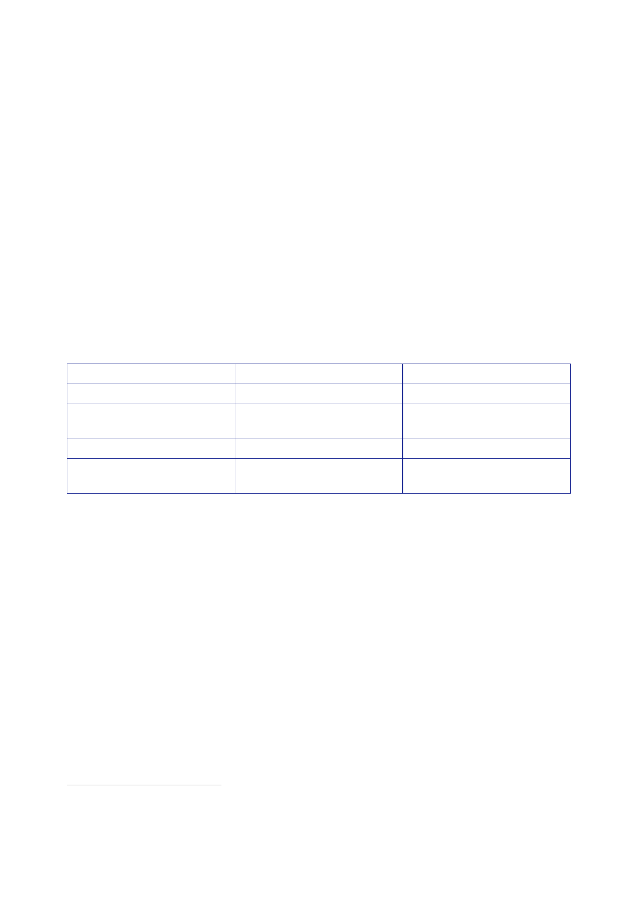

The Report
of the Iraq Inquiry
would be
withdrawn by March 2008. He described the only assets that could be
“tasked
with a
degree of certainty”:
•
Hermes 450
which suffered from technical and spares issues. It
was
recommended
that its maintenance contract was re‑negotiated to
expedite
the release
and availability of spare parts.
•
Desert Hawk
3 was heavily used and any reduction as a result of
drawdown
work would
have a significant impact.
•
Iraqi
Security Forces (ISF) assets which were limited.
1278.
Manned aerial
surveillance assets were “extremely limited”. Nimrod MR2
had
been
withdrawn and the use of helicopters in this role had a cost to
their “lift” role.
1279.
An annex to
the review provided a “snapshot” of the existing MND(SE)
ISTAR
capability:
UK
Broadsword
Hermes 450
UAV
Desert Hawk
3 Mini UAV
Nimrod
MR2
Quantity
3 x
[Helicopter]
3 (2 more
expected in
January 2008)
64
Principally
in support of Op
HERRICK,
not Coalition asset
Provision
[…] hours
per month
800 hours
per month
10 x 1hr
each day
Not MND(SE)
dedicated
1280.
On 15 January,
the Chiefs of Staff were advised that the first Hermes 450
had
crashed
during bad weather two days earlier and the next two were not due
in service
until the
end of January.667
1281.
Gen Dannatt
visited Iraq from 13 to 15 January.668
He
reported:
“I am aware
that CJO is conducting a comprehensive review of ISTAR but
the
25% reduction
of support to MND(SE) is completely counter‑intuitive at a
time
when we
need even greater situational awareness. I think the time has come
for
some
original thinking about how to increase our RW MAS [rotary‑wing
manned
airborne
surveillance] capability – if the Danes were able to introduce the
Fennec
as a low
cost solution within a three month period, surely we could produce
a
similar package?”
667
Minutes, 15
January 2008, Chiefs of Staff meeting.
668
Minute, CGS
to PSO/CDS, 21 January 2008, ‘CGS Visit to Iraq 13‑15 Jan
08’.
216